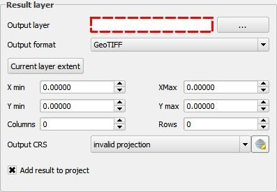

Writing Lessons¶
This document will describe how to write new lessons that can be read and followed using the Lessons plugin. Lessons can be created in two “flavours”, Python and YAML. The document will explain both.
Lesson’s file structure¶
Lessons are usually deployed in lessons groups or packages. Therefore is advisable to start by creating a new folder to hold your lessons and add an empty `__init__.py` file to it. Then, for each lesson, create a separate folder with the structure shown below:
lessons_group/
|-- lesson_1/
| |-- __init__py (or lesson.yaml)
| |-- project.qgs
| |-- [html files and images describing the lesson and each step in it]
| |-- data/
| | |-- [data files used in the lesson]
|
|-+ lesson_2/
|-+ lesson_3/
All these elements are explained in the next sections of this document.
Creating a lesson in Python¶
If you have created a folder for each lesson as described above, the steps of the lesson and the content of each step should be defined in the `__init__.py` file.
The `_init__.py` must start by importing the Lessons plugin’s methods.
from lessons.lesson import Lesson, Step
from lessons.utils import *
from qgis.utils import iface
Then, create a `Lesson` object, specifying its name, the group it belongs to (lessons can be grouped) and a detailed description.
lesson = Lesson ("Interpolating from a points layer", "Analysis lessons",
"This lesson shows how to use the interpolation capabilities of QGIS")
Instead of a string with the description, you can pass the name of an HTML file containing a richer description. For instance:
lesson = Lesson ("Interpolating from a points layer", "Analysis lessons",
"lesson.html")
There is no need to add the full path to the HTML file. As long as the file is in the same folder as the `__init__.py` file, the full path will be correctly resolved at runtime.
Note
The HTML files used to describe the lesson or its steps can be formatted using the most common HTML tags and styling options, including titles, images, paragraphs, ordered lists, etc., but there are some limitations. Consult Qt4.8 framework documentation for more details on the supported HTML subset.
Preload a project¶
If your lesson requires loading data into QGIS, you can prepare a project with that data. Name the project `project.qgs` and put it in the lesson folder as well, as indicated. Put all data in the sub-folder named `data` and load it in the project. Please make sure you save the project using relative paths. Having a `project.qgs` file in the folder will cause the lesson to automatically have a first step that loads the data before starting with the rest of the lesson. If you want your data to be loaded from a different project in another folder, or to load it in the middle of the lesson, you will have to manually add that step.
Adding steps¶
Now, you can add steps to your lesson using the `addStep` method, which has the following signature:
addStep(self, name, description, function=None, prestep=None, endsignal=None,
endsignalcheck=None, endcheck=lambda:True, steptype=1):
Here is a description of its arguments:
- name: the name of the step, to be shown in the Lessons Panel index when running the lesson.
- description: a longer description of the step. As in the case of the lesson description, it can be a string containing the description, or a string containing the name of an HTML file with the description itself.
- function: the function that execute this step. Even in the case of steps that are supposed to be performed manually by the user, a function can be supplied which performs the same action. In this case, the Run step button will be available, so the user can have the step automatically executed, instead of having to do it manually. If the step is a manual step and there is no function to perform the task,
Nonecan be passed - prestep: a function to be executed before starting the step, for preparing the necessary context. Should be
Noneif no preparation is needed - endsignal: a signal that indicates that the step has been finished. If not
None, the plugin will listen to the passed signal, and when it is emitted, it will automatically move to the next step. - endsignalcheck: in case it is needed to check that the endsignal signal should actually cause moving to the next step, pass a function to do the checking using this parameters. Should be used if the signal might be emmited in cases that do not represent the end of the step. Should be
Noneif no check has to be performed. - endcheck: a function to check that the step has been correctly executed. This function will be run when the lesson moves to the next step. It should return
Trueif the user has correctly performed the task for this step, or false otherwise. In this last case, the plugin will show a warning message and won’t let the user move to the next step until the step is correctly completed. - steptype:
`Step.MANUALSTEP`if the step is to be performed manually by the user, or`Step.AUTOMATEDSTEP`if it’s an automated one. In this last case, the step will not be shown in the lesson panel’s index, and it is required to pass a function using the`function`argument.
Convenience methods and utils¶
To make it easier to create new lessons, you will find some convenience methods in the `Lesson` class and functions for performing common tasks in the `lessons.utils` module.
The `addMenuClickStep()` method in the `Lesson` class will add a step that involves clicking a menu item. Its only mandatory argument is the path and name of the menu to click. This method will add a step with a standard name and description, and that will automatically move to the next step once that specified menu item is clicked.
lesson.addMenuClickStep("Layer/Create Layer/Create New Shapefile Layer...")
Optionally, you can provide a custom description, either as a string of text or an HTML file.
lesson.addMenuClickStep("Layer/Create Layer/Create New Shapefile Layer...", "create_shapefile.html")
The `addMenuClickStep()` method is particularely useful when a step involves opening a modal dialog that will block QGIS’s main window, and will not allow the user to move to the next step and see its description.
Another convenient method is the `setCleanup()`. With it you can set up a cleanup method, which will run when the lesson is finished, or the user exits the lesson before completing it.
lesson.setCleanup(cleanupMethod)
Yet another useful method is `addNextLesson()`. If your lesson is related to other lessons, you can add them as recommended lesson to continue after the current one is finished.
lesson.addNextLesson("Lessons Group", "Name of the lesson")
The name and group name must match the name and group name of the lesson that you want to add. Ideally, those lessons should be in the same lessons group as the current lesson to ensure that they are installed and available as well.
Python example¶
The Lessons plugin includes a simple lesson written in python. Here’s its __init__.py file as an example.
from lessons.lesson import Lesson, Step
from lessons.utils import *
from qgis.utils import iface
from lessons import addLessonModule
def isLayerActive():
layer = iface.activeLayer()
return layer is not None and layer.name() == "points"
def setActiveLayer():
layer = layerFromName("points")
iface.setActiveLayer(layer)
lesson = Lesson("Export to geojson", "Basic lessons", "lesson.html")
lesson.addStep("Set 'points' layer as active layer", "activelayer.html",
function = setActiveLayer, endcheck=isLayerActive, steptype=Step.MANUALSTEP)
lesson.addMenuClickStep("Layer/Save As...")
lesson.addStep("Save the file as geojson", "saveas.html", steptype=Step.MANUALSTEP)
lesson.addNextLesson("Basic lessons", "Export to geojson (yaml example)")
Creating simple lessons with YAML files¶
Lessons can also be created using YAML files, allowing those with no Python experience to create their lessons. Instead of a `___init___.py` file, you will need a `lesson.yaml` file. The remaining file structure of the lesson’s folder is the same as shown before.
Lessons created using YAML files cannot content automated routines, such as presteps or methods to check if the step was correctly performed before moving to the next one. Instead, they are just a collection of steps, each of them with an associated description.
Nevertheless, some simple automation is still possible. For instance, the lesson will start by opening the project.qgs if it exists in the lesson folder. There is menu step type that, as before, will create a standard description based on the menu path and name, and will move to the next step once the menu is clicked. And, you can suggest the user related lessons for him to follow.
YMAL example¶
The Lessons plugin also includes a simple lesson based in a YAML file. It is actually the same lesson that is included as a Python example, although it doesn’t contain some of the elements in that one, such as automatically running some steps, since those are not available in this case, as explained before.
Here’s the lesson YAML file, with comments to explain its content:
name: Export to geojson (yaml example) #The name of the lesson
group: Basic lessons #The group the lesson belongs to
description: lesson.html #the filename of the description page, which has to be in this same folder. You can also put the html code here directly
steps: #a list of steps in the lesson, in the correct order in which they have to be performed
- name: Set 'points' layer as active layer
description: activelayer.html #the filename of the description page for this step
- menu: Layer/Save As... # this will add a step that prompts the user to click on the specified menu
- name: Save the file as geojson
description: saveas.html
nextLessons: # a list of suggested lessons to show in the end of the lesson
- name: Export to geojson
group: Basic lessons
Capturing QGIS interaction to create a lesson¶
The lessons steps’ descriptions contain text and usually screenshots. These have to be created manually, by creating the corresponding html and image files.
An additional plugin is included in this repository, in the `lessonscreator` folder, aimed at users that plan to create their own lessons. It simplifies both writing text and creating screenshots, by capturing actions performed in QGIS. That is, the user performs the steps in the lesson to create, and the plugin tries to create the corresponding lesson files automatically.
Note
The Lessons Creator plugin is NOT installed with the Lessons Plugin by default. You need to install it manually.
To create a new lesson, go to the menu. Select a folder to store the lessons data.
From that moment, the plugin will be listening to your actions and documenting them according to the following ideas:
Whenever the focus changes to a new window, a screenshot of the window will be taken. An entry in the html file describing the current step will be added, which will include the screenshot.
Whenever the focus changes between two elements (but both of them having the same parent window/dialog), and the one that receives the focus is an input widget (text box, dropdown list, etc.), a screenshot of the new element that receives the focus will be taken. The element that receives the focus will be highlighted in the screenshot using a red dashed rectangle, as shown in the image below
The image will be added to the HTML file corresponding to the current step, along with a text entry in the form “Click on [widget_name]”
When edit widgets lose focus or are modified, the plugin will try to capture the user action. For instance, for a dropdown list, when the current value is changed, the text “Select [new_value_text] in the [dropdown_name] dropdown list” is added. In the case of text boxes, the text “Enter [text] in the [textbox_name] textbox” is added.
When a menu item is clicked, the text “Select the [menu_text] menu” will be added.
All texts snippets and screenshots are added to the HTML file that describes the current step. A lesson might contain several steps. To start a new step and add text and screenshots to another file, press Ctrl + w (Cmd + w in Mac OS) at anytime, and a new step will be started.
When you have captured all elements of your lesson, go to menu item.
In the folder that you selected, you will find all html and image files. You will also find a `__init.py__` file that describes the lesson. The folder as it is generated can be loaded in Lessons plugin and will be recognized as a valid lesson. Nevertheless, you may want to edit it to get a more polished lesson.
Deploy Lessons as a plugin¶
You can deploy a lesson or a collection of lessons as a QGIS plugin that you can share using a plugin repository. Or, you can add lessons to an existing plugin to explain how to use it. In these cases, you need to add some extra commands in the lessons creation.
The recommended procedure for adding new lessons is as follows:
- First, create a new python plugin (you can use QGIS plugins developing guidelines). This plugin will be responsible for registering the lessons so that they will appear in Lessons Selector list.
- For each lesson, create a separate folder with the same basic structure explained before. You can use either Python based or YAML based lessons.
- In the init method of your plugin, register your plugin adding the following snippet:
try:
from lessons import addLessonModule
addLessonModule(lesson_module)
except:
pass
Replace lesson_module with the reference to your lesson module (which you should have imported), and add as many entries as modules you have created in your set of lessons.
If your plugin contains several lessons, there is no need to call the `addLessonModule` method repeatedly. You can use the `addLessonsFolder` method and pass the path to the folder that contains the lesson subfolders.
In the `unload` method of your plugin, you should remove the lessons using the `removeLessonModule` or `removeLessonsFolder` methods :
try:
from lessons import removeLessonsFolder
except:
return
removeLessonsFolder(lesson_folder)
An example of a plugin that adds a collection of lessons can be found in the `examplelessons` folder of this repository. Use is as a template for your own collections. Using it, you do not have to call the `addLessonModule()` method manually. The plugin will automatically discover all available lessons. The only thing you have to do is to add your lessons under the `_lessons` subfolder, each of them in its corresponding subfolder, as described above.
Table Of Contents
Continue Reading
Previous: Usage
This Page
About Boundless
Boundless provides commercial open source software for internet mapping and geospatial application development. We are dedicated to the growth and support of open source software.
License
This work is licensed under a Creative Commons Attribution-Share Alike 3.0 United States License. Feel free to use this material, but we ask that you please retain the Boundless branding, logos and style.